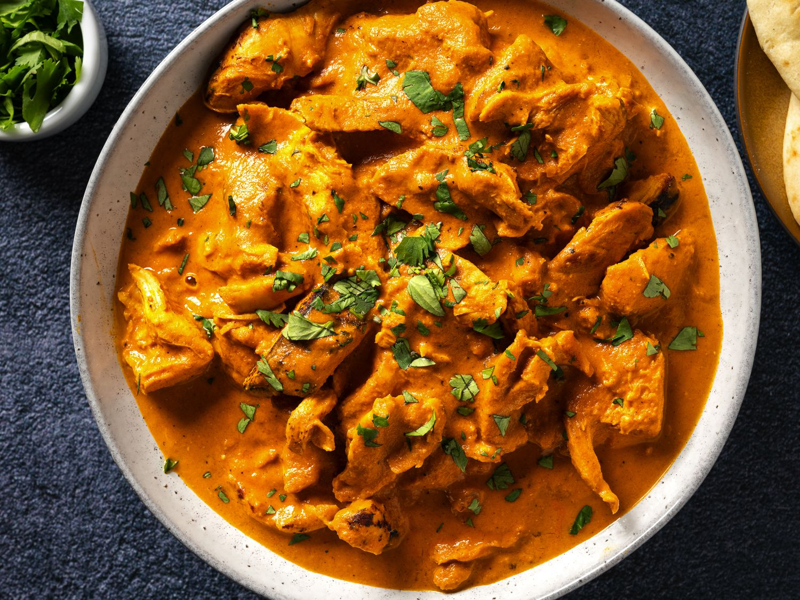
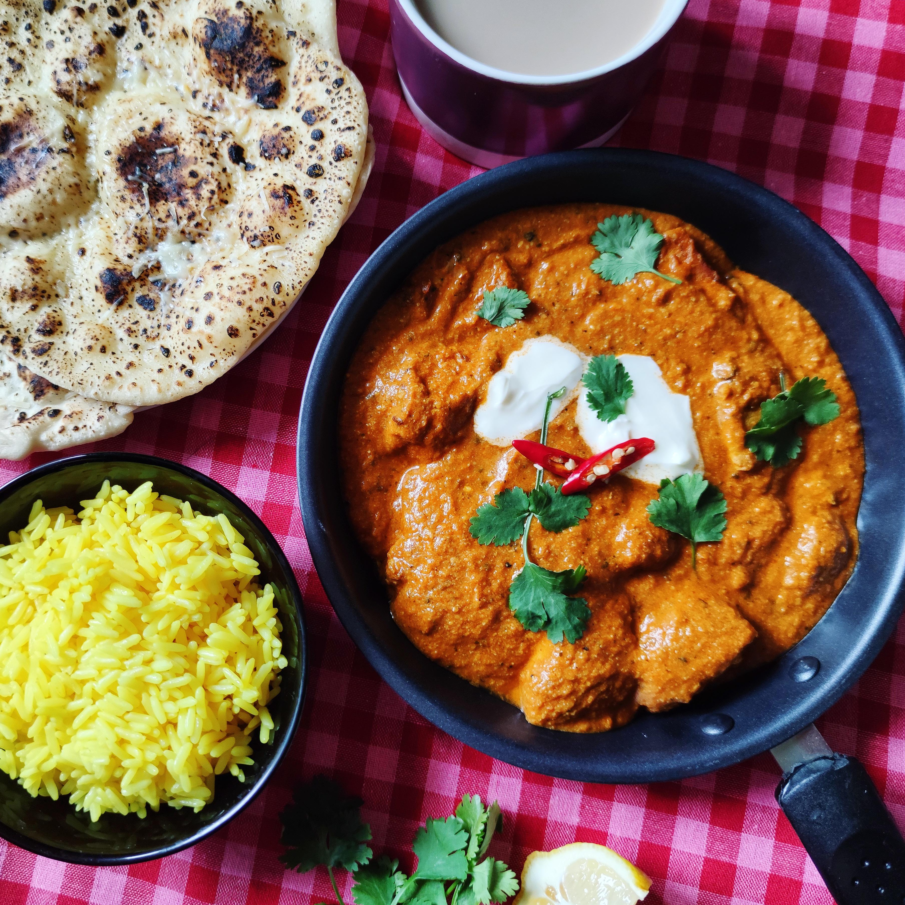
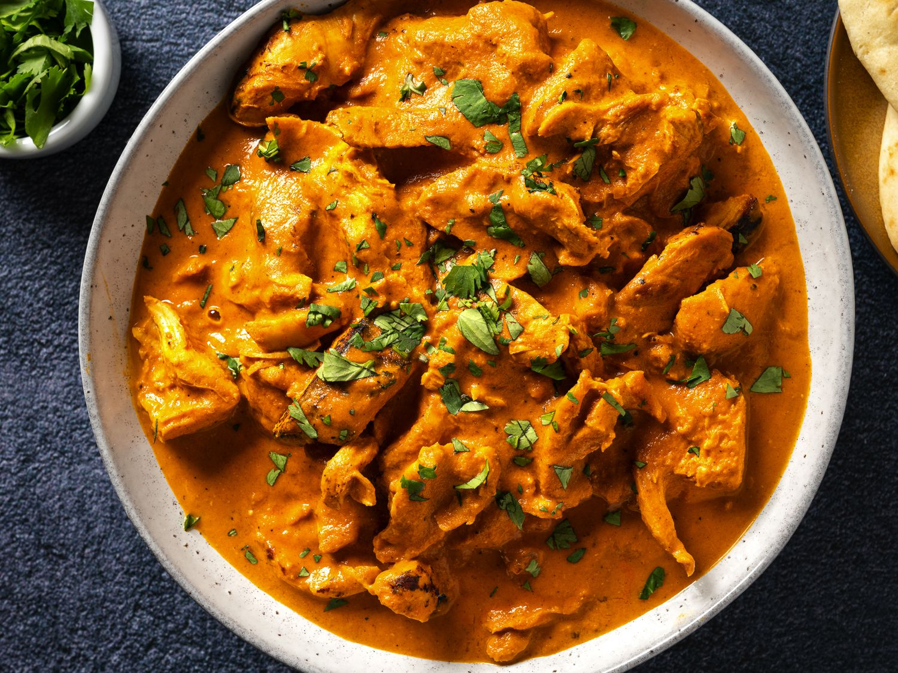
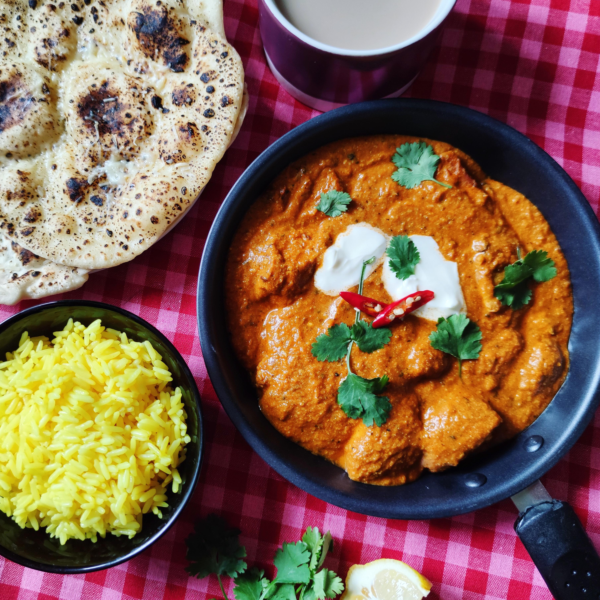

that are roasted in an oven, served in a creamy sauce. A tomato and coriander sauce is common, but no recipe
for chicken tikka masala is standard; a survey found that of 48 different recipes, the only common ingredient was chicken.
The sauce usually includes tomatoes (frequently as purée), cream, coconut cream and a masala spice mix.
The sauce and chicken pieces may be coloured orange using foodstuffs such as turmeric, paprika, tomato purée or with food dye.
 



Ingredients for Chicken Tikka
1}Chicken:500 grams
2}boneless
3}skinless chicken breast or thighs
4} cut into bite-sized pieces
For the Marinade:
1}Yogurt (Curd): 1 cup (thick, preferably hung curd or Greek yogurt)
2}Ginger-Garlic Paste: 2 tablespoons
3}Lemon Juice: 1 tablespoon
4}Vegetable Oil or Mustard Oil: 2 tablespoons
5}Red Chili Powder: 1-2 teaspoons (adjust to taste)
6}Turmeric Powder: 1/2 teaspoon
7}Garam Masala: 1 teaspoon
8}Cumin Powder: 1 teaspoon
9}Coriander Powder: 1 teaspoon
10}Kasuri Methi (dried fenugreek leaves): 1 tablespoon, crushed (optional)
11}Salt: to taste
12}Chaat Masala: 1 teaspoon (optional, for extra tanginess)
13}Food Color: a pinch (optional, for traditional reddish color)
Preparation Steps:
-Preparation the Marinade:
*In a large mixing bowl, combine the yogurt, ginger-garlic paste, lemon juice, vegetable oil, red chili powder, turmeric powder, garam masala, cumin powder, coriander powder, crushed kasuri methi (if using), and salt. Mix well to form a smooth marinade.
-Marinate the Chicken:
*Add the chicken pieces to the marinade and mix until all the pieces are well coated.
Cover the bowl and refrigerate for at least 2 hours, preferably overnight, to allow the flavors to penetrate the chicken.
-Prepare For Cooking:
*Preheat your grill, oven, or stovetop grill pan to medium-high heat. If using wooden skewers, soak them in water for at least 30 minutes to prevent burning.
Skewer the marinated chicken pieces, leaving a little space between each piece.
Cook the Chicken:
*Grilling: Grill the chicken skewers for about 10-15 minutes, turning occasionally, until the chicken is cooked through and has a nice char on the outside.
*Oven: Preheat the oven to 220°C (430°F).
Place the skewers on a baking sheet lined with aluminum foil and bake for 15-20 minutes, turning halfway through, until the chicken is cooked and slightly charred.
*Stovetop: Heat a grill pan over medium-high heat and cook the skewered chicken for 10-15 minutes, turning occasionally, until the chicken is cooked through and charred
-Finishing Touches:
*Once cooked, sprinkle chaat masala over the chicken tikka for extra flavor, if desired.
*Garnish with fresh coriander leaves and lemon wedges.